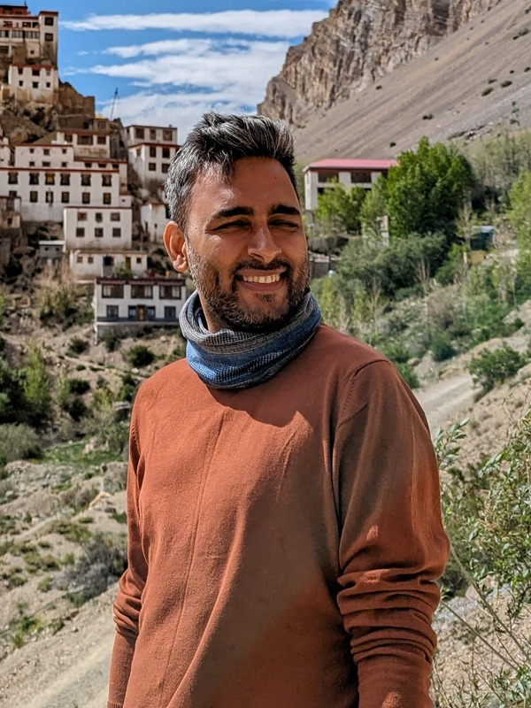

An Overland Journey of Effort and Stillness
The Journey Within is an intensive thirteen-day overland motorcycle expedition through the high desert of Upper Mustang, Nepal. Physical effort, remote landscapes, and space for reflection combine into an experience of active meditation. Mornings begin with grounding breathwork and Himalayan yoga led by HE Palga Rinpoche, days are spent navigating riverbeds and rocky passes on two wheels, and unhurried evenings offer space for contemplation on focus, detachment, and purposeful action.

The Contemplative and the Physical
Palga Rinpoche brings the contemplative dimension; Eksha brings the physical and adventure dimension. Together, they anchor the expedition in genuine cultural gravity and high-altitude athletic competence.

HE Palga Rinpoche
Recognised as the 8th Choekyong Palga Rinpoche, he is an internationally revered Buddhist teacher who bridges ancient monastic wisdom with modern life. An avid adventure motorcyclist, he leads morning breathwork, mountain yoga, and unhurried evening discourses on clarity, detachment, and emotional mastery.

Eksha Kerung
Serving Sikkim Police Officer, state and national boxer, and high-altitude motorcyclist featured on MTV Roadies. Eksha represents disciplined physical grit, female athletic empowerment, and authentic mountain competence. She sets the riding rhythm across riverbeds, shale climbs, and high passes.
Why Partner with Us?
We offer brand partners something fundamentally different from staged studio shoots or transient social media mentions. Three tangible principles guide every collaboration:
A setting that cannot be recreated in a studio
The raw texture of high-altitude Himalayan trails, shifting mountain light, 3,950 m altitude, and centuries-old Tibetan monastic architecture provide an authentic, cinematic backdrop that cannot be manufactured in a studio.
Products with a genuine role in the journey
Riding gear, technical apparel, cameras, hydration, and luggage are subjected to genuine Himalayan conditions, freezing morning starts, steep climbs, and rocky riverbeds. Partners receive genuine documentation of their products performing under real strain.
Original material the brand can use
A dedicated, nimble field production unit captures bespoke visual stories, delivering high-resolution imagery and video assets tailored to the partner's brand narrative, ready for owned channels, PR, and digital campaigns.
Content We Could Create
Partners can help create original, story-led content in an authentic expedition setting. Below are four editorial concepts illustrating how partner products and stories can be integrated into the journey:
The Long Road to Lo Manthang
Route, effort and landscape in a short expedition film. Wide-angle cinematography capturing the convoy navigating the Kali Gandaki riverbed, crossing high-altitude passes, and arriving at the fortified gates of Lo Manthang.
The Kit That Earns Its Place
Product in real preparation and use. Tactile close-ups of equipment packed in the morning cold, tested against river splashes, wind, and technical gravel climbs across thirteen demanding days.
The Journey Between Destinations
People, places and quieter cultural moments. Unhurried roadside tea stops, conversations in ancient mountain hamlets, monastery courtyards, and reflections on local Himalayan heritage.
A Different Kind of Discipline
Preparation, endurance and attention. Dawn breathwork with Rinpoche, daily physical recovery routines, hydration routines at 3,800+ metres, and mental focus before challenging trail sections.
Sponsorship Tier Comparison
A small number of founding partnerships are available; scope and deliverables are agreed in writing with each partner. Strictly limited to four partners across non-competing categories.
Founding Partner
- Primary Content Asset Dedicated brand film (60-90 second bespoke narrative)
- High-Resolution Photography 12 edited images (editorial and product-in-action)
- Social Contribution Agreed Eksha-led feature + project channels
- Category Exclusivity Agreed category exclusivity (sole brand in sector)
- Organic Digital Usage Defined in agreement (12-month proposed digital rights)
- Future Expeditions First opportunity on next 3 announced expeditions
Expedition Partner
- Primary Content Asset Dedicated field reel (30-60 second focused short-form)
- High-Resolution Photography 6 edited images (product in trail use)
- Social Contribution Agreed field content on project channels
- Category Exclusivity Agreed sub-category exclusivity
- Organic Digital Usage 6 months proposed digital usage
- Future Expeditions Priority discussion on next 2 announced expeditions
Field Partner
- Primary Content Asset Product integration in recap film + field stills
- High-Resolution Photography 3 edited images (tactile product capture)
- Social Contribution Agreed story mentions
- Category Exclusivity Not included by default
- Organic Digital Usage 3 months proposed digital usage
- Future Expeditions Early invitation to discuss future routes
The First of Several Journeys
Building a Long-Term Overland Narrative
Upper Mustang is the beginning of a wider series exploring remote landscapes, cultural traditions and the relationship between physical effort and stillness. Founding partners will have the first opportunity to discuss corresponding sponsor slots on the next three announced expeditions. Future commitments, fees and deliverables will be agreed separately.
Help bring the inaugural journey to life.
We are seeking a few brands with a genuine place in this expedition. Let us explore a meaningful collaboration tailored to your brand objectives.

Vikas Nagpal · Producer & Expedition Lead · vikas@totemtou.com